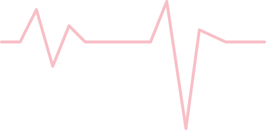
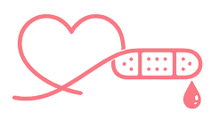

CPR Response Plus
현재 심정지 발생,
즉시 대응이 필요합니다.
골든타임 안의 침착한 행동이 생존 가능성을 바꿉니다. 가까운 CPR 교육과 대응 순서를 한곳에서 확인하세요.
Critical first minutes
보이면
바로 행동.
CPR Response Plus는 시민이 첫 1분 안에 움직이도록 돕는 CPR 교육 안내입니다. 현장에서 바로 떠올릴 한 문장과 순서를 남깁니다.
기억할 건 세 가지: 확인, 지정, 압박.
Campaign message
반응 없음 + 정상 호흡 아님 = 지금 CPR
완벽한 설명보다 먼저 필요한 건, 바로 시작하는 순서입니다.
Check
확인
반응과 호흡
Call
지정
119와 AED
Push
압박
빠르고 깊게
현장에서 외울 한 문장
“확인하고, 지정하고, 바로 누르세요.”
혼자 해결하려 하지 마세요. 한 사람은 119, 한 사람은 AED, 한 사람은 압박을 맡으면 됩니다.
Emergency response
4단계 현장 플로우
한 화면에서 순서가 바로 보이도록, 신고와 AED 요청을 분리하지 않고 현장 역할 흐름으로 정리했습니다.
-
01 첫 행동
상태 확인
반응과 정상 호흡을 10초 안에 봅니다.
-
02 역할 나누기
사람 지정
119 신고와 AED 요청을 각각 맡깁니다.
-
03 즉시 실행
압박 시작
가슴 중앙을 빠르고 깊게 계속 누릅니다.
-
04 구조 연결
AED 연결
음성 안내를 따르고 분석 중에는 떨어집니다.
BLOO RESPONSE

Act before the line stops
당신의 행동이 만든 변화
심정지 현장에서 시간은 설명보다 빠르게 지나갑니다. 바로 움직이는 사람 한 명이 구조 가능 시간을 붙잡습니다.
Find a class
내 주변 AED & CPR 교육 찾기
지역과 일정에 맞는 교육을 확인하고, 실제 상황에 필요한 감각을 익혀보세요.

Response starts now
오늘, 당신의 행동이
누군가의 내일이 됩니다.
CPR 교육, AED 위치 확인, 응급 대응 순서를 지금 확인해보세요.